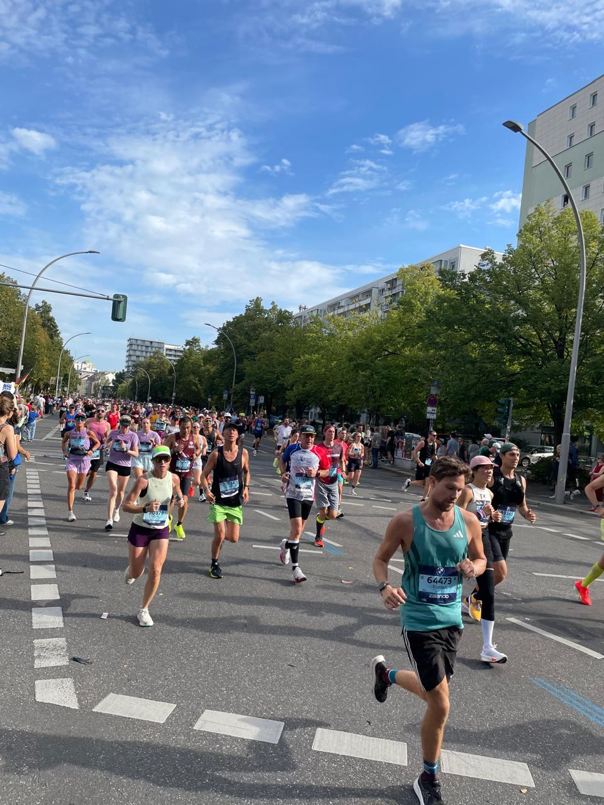

2025/09/21
One more Berlin marathon. One more time I'm a mere spectator. This event is very dear to me because this is where I got my inspiration to run. The runners go right past my house. I still remember the first time I saw them. The energy and the vibe was infectious. I was even more impressed with the crows cheering the runners. That's when I decided to start running. My goal was to run the next Berlin marathon.  It's been 4 years since then. I'm still not there. But eventually, I will get there. For now, I'm content being a spectator and cheer for these amazing athletes.